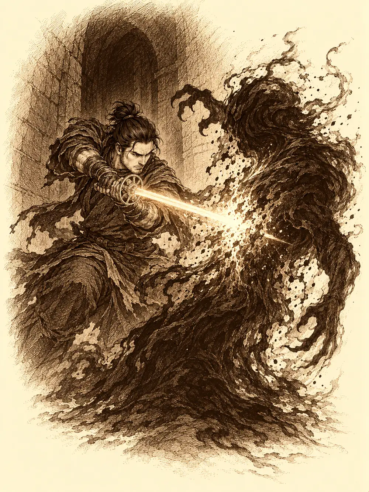

Capítulo 158
Iluminar la oscuridad
Libro IX · Mareas y muertos
Calista le echó a Serafina agua fría en la cara. Radical, pero efectivo.
La capitana se incorporó de golpe en la cama, jadeando, y se llevó la mano al pecho. Guxi estaba a su lado. La había encontrado en el suelo de la casa, desangrándose, y había cerrado la hemorragia él solo con todo lo que sabía. Ahora tenía las manos manchadas de una sangre que ya empezaba a secarse.
"Cariño, ¿qué te ha pasado?".
Serafina contó lo que pudo. Había ido a hablar con Kurobane y quien le había respondido no era Kurobane. Era la otra voluntad, la que vivía en su cuerpo. La había apuñalado. Calista apretó la mandíbula y le examinó las heridas. Guxi las había cerrado bien; quedaba el dolor. Serafina se abrió la camisa y le enseñó la marca que tenía en el pecho, un círculo cortado en la piel. La misma que había en la habitación del ninja.
"Es el símbolo del monasterio", dijo Calista.
Aquel día Gelbreak estaba siendo shogun, el premio de la apuesta, y lo había disfrutado hasta que Tap había irrumpido con la noticia. Calista ya había dado la orden de buscar a Kurobane. Serafina y Guxi le pidieron que lo trajeran vivo.
"Él no tiene la culpa de lo que le ha hecho Osuray".
"Si queréis capturarlo con vida, adelante. Pero si se convierte en un peligro para los demás, no voy a dudar. Ya lo avisé una vez".
Serafina le dijo que siempre había una solución, que había que buscarla, y Calista asintió sin prometer nada.
Fuera de la habitación, Gelbreak estaba mirando con mucho interés los trastos que un kender había desparramado sobre una mesa. Tekel había llegado aquella misma mañana. Era un veterano de los cazadores, uno de los primeros, aunque llevaba tanto tiempo fuera que Calista no lo conocía. Había manipulado un objeto perdido, les contó, y había acabado en un lugar extraño, lleno de hadas dando vueltas. Habían arreglado el objeto y había podido volver. No había mucho más que contar.
Calista le tendió la mano y se presentó como la nueva shogun. El kender la miró, se rio y no se la estrechó. Le costaba creérselo.
Ella le resumió lo que se había perdido. Había un frente en el sur, con demonios que intentaban invadir Kuroto. La esposa del antiguo shogun había resultado ser una demonio, el shogun había muerto sin heredero y la habían elegido a ella. Y ahora uno de sus reclutas, un tal Kurobane, estaba poseído por una sombra y había atacado a otra cazadora.
"Nos gustaría que nos acompañaras. Es peligroso, y lo entendería si no quieres, recién llegado".
"Una aventura siempre es interesante".
Antes de salir, Serafina le dio las gracias a Tip por haberla salvado.
Cruzaron el portal hasta el sur. El monasterio de las sombras quedaba entre tierras infestadas de demonios, y Calista les pidió silencio por el camino y les advirtió de las sombras que todavía rondaban aquellos pasillos. Tekel sacó una flauta y empezó a tocar algo alegre y precioso, tan bien que Calista abrió mucho los ojos. Cuando dejaron atrás el campamento, la shogun le tapó un agujero de la flauta con el dedo.
"Mejor guárdalo para la celebración, si volvemos sin bajas. No queremos llamar a los demonios".
El kender cambió a una tonada triste, de fondo. Gelbreak le recordó a Serafina, antes de abrir la puerta, que la próxima vez no dudara.
Dentro, en la sala central, había una flor enorme de cristal, y dentro de la flor estaba Kurobane. Se le veía a través de los pétalos transparentes. Su cuerpo era el del joven, pero lo envolvía una especie de miasma oscuro.
Gelbreak desenvainó.
"Espera", dijo Calista, y le puso la mano en el brazo. "Antes busquemos otra solución".
Miró alrededor sin fiarse de nada, y vio que algunas sombras de la sala no se comportaban como sombras. Se movían.
Tekel se acercó en silencio, encendió una antorcha y las sombras se revelaron. Calista congeló el agua del suelo para que les costara moverse. Gelbreak las cortaba con su estoque, Guxi las fulminaba con rayos, Serafina las golpeaba con los puños y Tekel les lanzaba proyectiles de luz que las deshacían. Las criaturas oscuras fueron cayendo una tras otra.
Cuando cayó la última, Osuray salió del cuerpo de Kurobane como una segunda sombra pegada a su espalda.
"Habéis venido a vencerme. Pues tendréis que hacerlo en mi terreno".
Levantó una mano, la cerró, y la oscuridad los envolvió a todos.
Aparecieron cada uno en un sitio, en un laberinto negro de paredes que no se veían hasta tocarlas. Había trampas en el suelo. La oscuridad era tan espesa que hasta los ojos acostumbrados a ella veían en gris.
También Kurobane estaba allí, en algún lugar, herido. Oyó una voz a su espalda.
"Esta vez también morirás tú aquí, Kurobane. Y tu cuerpo será mío".
Intentaba llegar hasta sus compañeros y no podía atravesar las barreras de su propia mente.
Calista mandó a su doble a explorar. Tekel dejó que la bestia que llevaba dentro le diera sus ojos para ver en la oscuridad. Serafina avanzaba a gritos, llamando a alguien, cualquiera, hasta que algo le pinchó en la pierna y empezó a pisar con más cuidado. Osuray atravesaba las paredes como si no existieran. Fue a por ella primero. La golpeaba como golpean los monjes, con la mano abierta, y cada golpe dejaba una quemadura negra.
Gelbreak encontró a alguien en un rincón de la oscuridad, encogido y ensangrentado, y lo atacó. Tekel también le disparó. Guxi les gritó que se detuvieran.
"¡Es Kurobane! ¡Buscad a Osuray, no matéis a nuestro compañero!".
Tekel bajó el arma. Gelbreak inmovilizó al joven con un conjuro y, después de pensarlo, le dio de beber una poción sin soltarlo, y se fue a buscar al enemigo de verdad.
Osuray derribó a Serafina. Ella se levantó, volvió a pelear, hubo un momento ridículo en el que algo la convirtió en oveja y siguió plantándole cara. Volvió a caer. Guxi rompió la oscuridad a su alrededor y corrió hacia ella con una curación que la devolvió antes de que fuera tarde. Desde ese momento no se separó de su lado.

Calista reunió al grupo alrededor de la sombra. Levantó el estoque de la perla y les dio la orden de golpear todos a la vez. Luego se transformó en dragón y le soltó su aliento a Osuray, y el aliento alcanzó también a algunos de los suyos. Tekel no dejaba de disparar luz. Gelbreak le lanzó a la sombra todo lo que tenía.
En su rincón, Kurobane consiguió moverse.
Se levantó con dificultad. Se acercó.
"Me da igual perderme todavía más en la oscuridad. Tengo una misión que cumplir. Y un contrato".
Osuray se rio. "No puedes matarme, niño".
Kurobane pasó la mano por el filo de su estoque y el arma empezó a brillar de una manera que no era la de siempre, una luz que no tenía nada de sombra.
"Esto no te lo enseñaron en el monasterio".
Se lo clavó.
Osuray se deshizo. La oscuridad los envolvió otra vez a todos, y cuando se apartó estaban de nuevo en la sala del monasterio.
La flor de cristal estaba abierta. Kurobane yacía en el suelo, agotado, recuperando poco a poco la conciencia. Tekel, como buen kender, se acercó a ver cómo estaba y empezó a revisarle los bolsillos. Kurobane notó unas manitas donde no debían estar, se incorporó, apartó al kender y se derrumbó de cansancio.
Serafina corrió hacia él y lo sostuvo.
"Perdóname", le dijo él. "No debiste venir. Era muy peligroso".
"Somos amigos, Kurobane. Aunque no lo parezca. Yo también quiero disculparme por lo que te dije. Somos compañeros".
Él le tomó la mano y le señaló el pecho, la marca circular.
"Deberíamos volver a la base. Quiero intentar curarte eso".
Entonces se oyó un estoque salir de su vaina. Gelbreak se acercaba con el arma en la mano. Kurobane se soltó de Serafina, se apartó de ella y se puso de rodillas, con la cabeza inclinada hacia delante. Aceptaba la muerte.
Mientras todos miraban la escena, Tekel le robó a Guxi cuarenta y ocho monedas.
Gelbreak no le cortó la cabeza. Agarró por el filo el estoque de Kurobane, que se le clavó en la palma, y la sangre le corrió por la muñeca. Las sombras del arma empezaron a salir del metal y a subirle por la mano como hilos negros, y de su mano pasaron a su propio estoque, que se fue volviendo negro.
Kurobane oyó gritar a Osuray. Eran los gritos de la sombra mientras la sacaban. Por un instante, como un destello, vio algo de Gelbreak. Nunca contó qué.
Cuando terminó, el arma de Kurobane era de metal limpio, con la empuñadura azulada. Las sombras que todavía le quedaban dentro eran muchas menos.
Gelbreak miraba su estoque negro. Lo tocó con un dedo, y unos hilillos de sombra se le enroscaron en la yema.
"¿Qué es esto?", murmuró, sonriendo. "Tengo muchas preguntas".
Calista le pidió a Kurobane que se tomara unos días de descanso para curarse las heridas.
"Prefiero tener a mis hombres enteros que a medias. Luego vuelve al trabajo. Tienes que infiltrarte entre esos cultistas. Cuento contigo".
Kurobane intentó sonreírle y le salió la mueca de siempre, todos los dientes afilados como los de un tiburón. Se puso a curar a sus compañeros. Luego, ya de pie, sonrió de verdad por primera vez en mucho tiempo, se quitó la capa y la capucha con un chasquido, las dejó caer al suelo y se volvió hacia Serafina.
"Tú la llevas".
Y salió corriendo tan rápido que dejó tras de sí una figura de humo con su forma. Tekel recogió la capucha del suelo, se la puso y salió detrás de él imitando sus posturas de ninja, flauta en mano.
Gelbreak y Calista se quedaron mirando el estoque negro. Quizá lo probarían con algún demonio de camino a casa.
Channi se despertó de una pesadilla llena de sangre, de sombras y de unos ojos azules. Salió corriendo del dormitorio, resbaló en un charco de sangre y llamó a gritos.
"¡Tezca!".
Kurobane apareció en el pasillo con una sonrisa cálida. A su alrededor se disolvían los últimos restos de magia oscura. Estaba herido todavía. Channi se le abrazó a las piernas y le contó que había soñado que algo le hacía daño.
"El hombre feo ya no está. Solo quedo yo".
La pequeña le vio sangre, una herida de flecha y otra de la que salían unas líneas verdes muy finas, y se ofreció a curarlo. Él le dijo que bastaría con descansar. Channi lo celebró a saltos hasta que él le recordó que los demás dormían. Le dejó elegir entre un nido y la almohada, y Channi eligió la almohada, que era su sitio. Kurobane se tumbó a su lado. Pensó que se había librado del odio que llevaba dentro y que una mujer había cumplido su promesa. Channi fingió dormirse para acercarse a su mejilla y se quedó dormida de verdad. Él la colocó sobre su pecho y la tapó con un trozo de tela.
Dos días después, R3 llegó a la base de Sho con una sirena roja encendida en la cabeza y pitando como un loco. Jin lo reconoció: era el robot de Archi. El pequeño autómata buscó a otros cazadores, no encontró a nadie más, se abrió el cuerpo y dejó a la vista un cuarzo rosa que proyectaba una imagen.
Era Archi. Decía que lo había traicionado la voz de su intelecto. Pedía que llevaran aquel cristal a su taller. Y entonces la grabación se llenó de imágenes que el gnomo había captado por error y que no debían ver, y las instrucciones importantes se perdieron entre ellas. Jin intentó sacar la piedra y no pudo. La proyección subió de volumen y despertó a Channi.
La imagen se aclaró un momento. Archi decía que él no recordaría nada, que confiaba en quienes vieran aquello y que pedía perdón a Calista y a Gelbreak.
El cristal se soltó y R3 volvió a cerrarse. Channi no había entendido nada, pero cuando Jin decidió bajar a los barrios bajos con la esperanza de salvar a Archi, se ofreció a acompañarlo.
En esos mismos barrios, Banzo seguía preguntando por el gnomo de puerta en puerta. No sabía si la pista que lo había llevado hasta allí era buena. Empezaba a sospechar que Archi los estaba evitando. Siguió buscando.